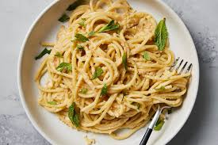

Featured Dishes

[Burger]
[A dish consisting of fillings—usually a patty of ground meat, typically beef—placed inside a sliced bun or bread roll]

[Pasta]
[A type of food typically made from an unleavened dough of wheat flour mixed with water or eggs]

[Salad]
[A dish consisting of mixed ingredients, frequently vegetables]